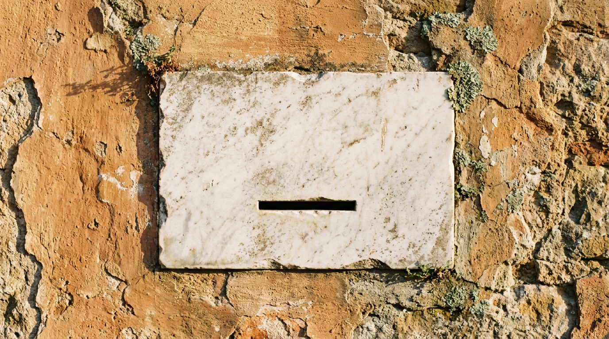

23 novembre 1820 — la prima cassetta postale del mondo?

Bisogna guardare bene. In Piazza della Libertà, tra il Palazzo Apostolico e la fontana del Bernini, sul muro tra il Municipio e la Posta c'è una fessura nel marmo. Una targa la chiama la prima buca delle corrispondenze del mondo. Duecentosei anni fa, proprio in questi giorni di novembre, il consiglio comunale decideva di farla.
Un problema di posta
Nel 1820 la corrispondenza per Castel Gandolfo non arrivava in paese: si fermava nella vicina Albano. Lì lettere e pacchi aspettavano che un incaricato, pagato mezzo baiocco a lettera, passasse a ritirarli. Ma il problema si ripresentava al ritorno: l'incaricato non sapeva né leggere né scrivere, e recapitare la posta alle persone giuste era un'impresa (Comune di Castel Gandolfo). Il baiocco era la moneta corrente dello Stato Pontificio, di cui il borgo faceva parte.
La seduta del 23 novembre
La soluzione la propose ai priori il consigliere Angelo Antonio Iacorossi, nei documenti anche Jacorossi. Il 23 novembre 1820 il Consiglio municipale approvò il progetto con 11 voti favorevoli e 3 contrari; la delibera è oggi conservata al Museo storico della Comunicazione, nel palazzo del Ministero all'Eur, a Roma (Comune di Castel Gandolfo). La targa posta nel 1995, per il centosettantacinquesimo anniversario, elenca i presenti a quella seduta: il luogotenente Paolo Mallozzi, il capo priore Marco Troiani, i priori Candido Marazzi e Filippo Albenzi, e i consiglieri, tra cui lo stesso Iacorossi (Historical Marker Database).
L'idea era semplice: una buca in piazza dove imbucare le lettere da spedire, raccolte poi in un solo punto invece di passare di mano in mano. Duecento anni dopo, nel 2020, il Comune ha aggiunto una seconda targa, realizzata da La Musa Mosaici, con un codice QR che rimanda alla storia della cassetta (Comune di Castel Gandolfo). La targa di bronzo originale, con i caratteri scuri in rilievo, è un po' difficile da leggere (Italia.it).
“La prima buca delle corrispondenze del mondo.”La targa di Piazza della Libertà, secondo il Comune
Davvero la prima?
Qui serve prudenza. Anche Wikipedia, parlando di Castel Gandolfo, la definisce quella “che la tradizione locale identifica come la prima cassetta postale del mondo” (Wikipedia). Altre città hanno date più antiche: si ritiene che le prime buche postali siano state installate a Parigi e dintorni già nel 1653, e in Gran Bretagna una cassetta murata nell'ufficio postale di Wakefield porta la data 1809 ed è considerata la più antica del paese (Wikipedia). Il primato di Castel Gandolfo, insomma, è un vanto locale più che un fatto accertato. Nessuna di queste date toglie valore alla storia del borgo: semplicemente la colloca nel suo contesto europeo, accanto ad altre esperienze nate negli stessi decenni.
Quello che resta certo è altrettanto interessante. La delibera è un documento datato e conservato, e mostra un piccolo comune pontificio che, vent'anni prima del Penny Black, il primo francobollo adesivo emesso in Gran Bretagna il 1° maggio 1840, cerca da sé una soluzione pratica al problema della posta. A quell'epoca, del resto, in Gran Bretagna era di solito il destinatario a pagare la spedizione alla consegna (Wikipedia).
Come trovarla
La cassetta è un rettangolo di marmo con una fessura, incassato nel muro tra il Municipio e l'ufficio postale, in Piazza della Libertà; dalla stazione di Castel Gandolfo si raggiunge a piedi in pochi minuti (Italia.it). Vale la pena fermarsi, leggere le due targhe e poi alzare lo sguardo sulla piazza, che dal 1820 non è cambiata poi molto.
La cornice è quella del cuore del borgo. Sulla stessa piazza si affacciano il Palazzo Pontificio progettato da Carlo Maderno, la collegiata pontificia di San Tommaso da Villanova e la fontana, entrambe del Bernini su commissione di Papa Alessandro VII (Comune di Castel Gandolfo). Nel 1820 la buca delle lettere era dunque un oggetto modernissimo collocato in uno scenario barocco già vecchio di un secolo e mezzo: una piccola innovazione amministrativa all'ombra della residenza dei papi. Chi ci passa oggi può abbinare la visita alla chiesa del Bernini e al belvedere sul lago, a pochi passi.